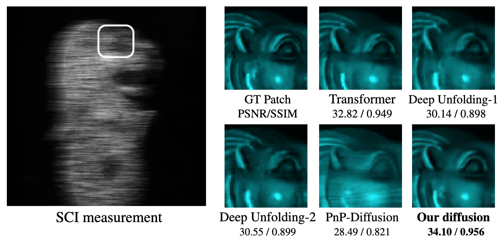
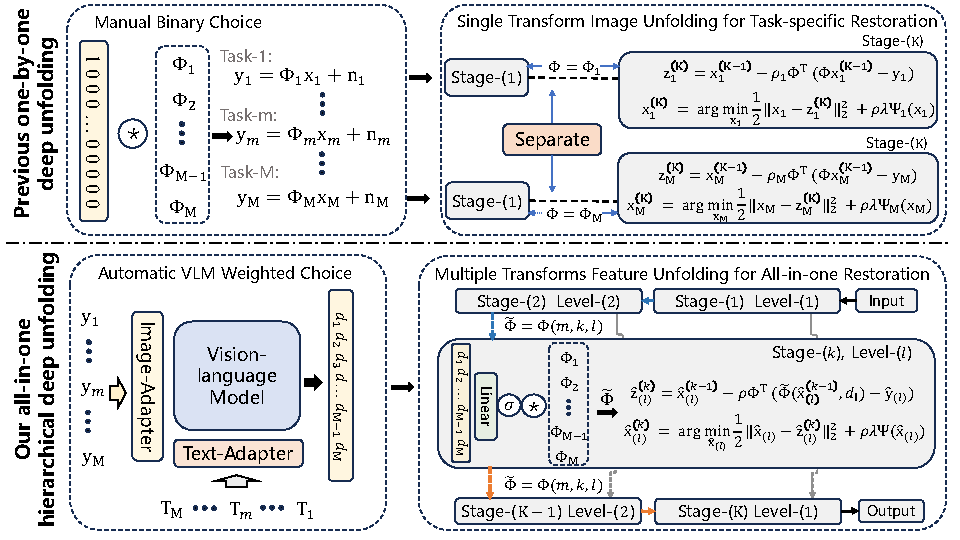
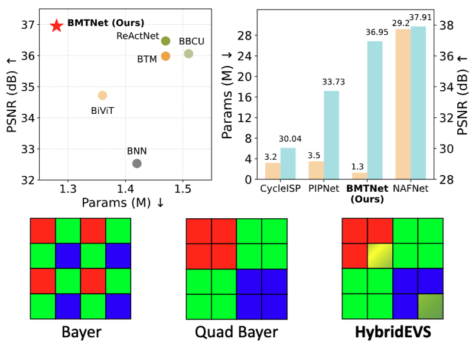
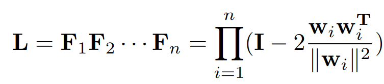

Bio

Haijin Zeng
Ph.D Candidate
Email: haijin.zeng@imec.be
imec & Ghent University | Google Scholar
Location: St-Pietersnieuwstraat 41, B-9000 Gent, Belgium
I am a PhD candidate at imec & Ghent University working under Prof. Wilfried Philips and Prof. Hiep Luong. I received my Master's degree in Applied Mathematics from Northwest A&F University.
My research focuses on computational imaging, tensor completion, hyperspectral imaging, and mobile intelligent photography and imaging. My goal is to develop improved imaging techniques that push the boundaries of machine vision.
Research Topic
I work in computational imaging and tensor theory. My current research topics include:
- Image Signal Processing: Mobile Camera, Spectral Camera
- Computational Imaging: MSFA/Snapshot Spectral Imaging, MRI, Bayer and Non-Bayer Imaging
- Tensor Theory: Low-Rank Tensor Representation, Convex and Non-convex Optimization
Featured Publications
-

-

-

-

-

-
 Wavelength-Embedding-guided Filter-Array Transformer for Spectral DemosaicingConference paper
Wavelength-Embedding-guided Filter-Array Transformer for Spectral DemosaicingConference paper -

-

-

-

-

-
 Inheriting Bayer's Legacy: Joint Remosaicing and Denoising for Quad Bayer Image SensorJournal article
Inheriting Bayer's Legacy: Joint Remosaicing and Denoising for Quad Bayer Image SensorJournal article -

-

-
 Multi-mode Core Tensor Factorization based Low-Rankness and Its Applications to Tensor CompletionJournal article
Multi-mode Core Tensor Factorization based Low-Rankness and Its Applications to Tensor CompletionJournal article -
 Hyperspectral Image Restoration via Global L1-2 Spatial-Spectral Total Variation Regularized Local Low-Rank Tensor RecoveryJournal article
Hyperspectral Image Restoration via Global L1-2 Spatial-Spectral Total Variation Regularized Local Low-Rank Tensor RecoveryJournal article -

-

Membership
- IEEE, Student Member
Fundings
- BOF Special Research Fund, 2021-2025
Journal Reviewer
- Journal of Computational and Applied Mathematics
- IEEE Transactions on Image Processing (TIP)
- IEEE Transactions on Neural Networks and Learning Systems (TNNLS)
- IEEE Transactions on Geoscience and Remote Sensing (TGRS)
- IEEE Signal Processing Letters
- IEEE Journal of Selected Topics in Applied Earth Observations and Remote Sensing (JSTARS)
- IEEE Geoscience and Remote Sensing Letters (GRSL)
- IEEE Access
- International Journal of Machine Learning and Cybernetics
- Neurocomputing
- Scientific Reports
- Signal, Image and Video Processing
- Knowledge and Information Systems
- The Journal of Supercomputing
Conference Reviewer
- International Conference on Learning Representations (ICLR)
- International Conference on Machine Learning (ICML)
- IEEE Conference on Computer Vision and Pattern Recognition (CVPR)
- European Conference on Computer Vision (ECCV)
- Conference on Neural Information Processing Systems (NeurIPS)
- International Conference on Artificial Intelligence and Statistics (AISTATS)
- AAAI Conference on Artificial Intelligence (AAAI)
- ACM Multimedia (ACM MM)
- International Joint Conference on Neural Networks (IJCNN)
- IEEE Conference on Multimedia Expo (ICME)
- IEEE International Conference on Acoustics, Speech, and Signal Processing (ICASSP)
Awards
- Third place in CVPR 2024 Mobile Intelligent Photography and Imaging (MIPI) challenge, CVPR
- 2023 imec PhD Excellence Award, imec (Two per year across all global imec research institutes)
- Third place in ECCV 2022 MIPI challenge, ECCV
- Top-Ten Distinguished Graduate Student, 10/2400+ (Northwest A&F University)
- Outstanding Graduate Student, Shaanxi Province
- Outstanding Graduates Award, Top 10%, Northwest A&F University
- National Scholarship (< 2%, Ministry of Education)
- Best Master's Thesis Award, Northwest A&F University
- National second prize, National Post-Graduate Mathematical Contest in Modeling (GMCM)
- National third prize, National Post-Graduate Mathematical Contest in Modeling (GMCM)
- First prize (mathematics category) of 2017 Chinese Mathematics Competitions (CMC)
More about Me
I'm a badminton enthusiast, and I also find joy in middle- to long-distance running.